Get the app
Get the app
Your anime. Your friends. One app.
Sign in with MyAnimeList or AniList to track, rate and organise everything you watch and read - then see what everyone you follow is watching, and how they scored it.
Independent and unofficial. Not affiliated with MyAnimeList or AniList - it signs in through their official APIs with your own account.
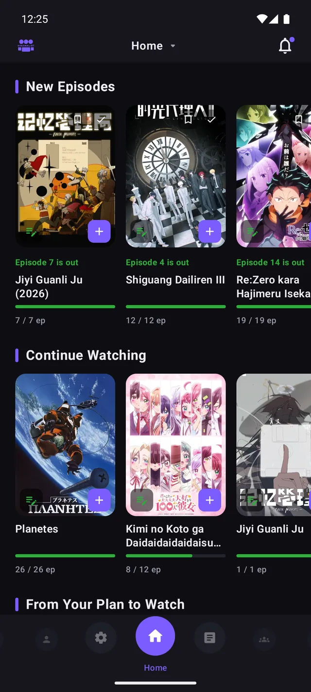
A tracker is only half of it. The other half is who you watch with.
Every edit,
everywhere,
at once.
Status, score, episodes, chapters, volumes, dates, tags and notes - with a one-tap "+1". Change something on a title's page and it is already updated on Home and in your list before you get back.
- List or poster-grid layout, status tabs, filters and sorts
- Your score scale: 100-point, decimal, 5 stars or smileys
- Titles in romaji or English, your choice
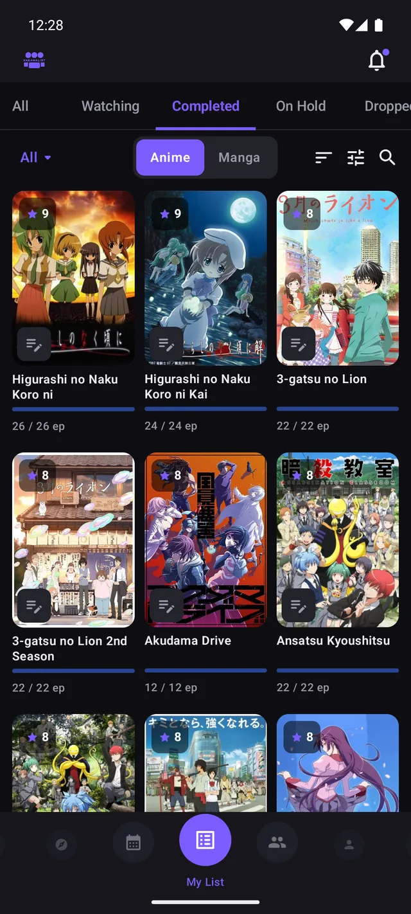
See what
everyone is
watching.
Add people by MyAnimeList username or follow AniList accounts - both sets, side by side. Their activity arrives in one merged feed, and every title page shows what your friends scored it, next to your own.
- One feed, swipeable across anime, episodes, manga and chapters
- Browse a friend's list on the same screen as your own
- Friend Scores and their average, on any title
- Export and import your friends list
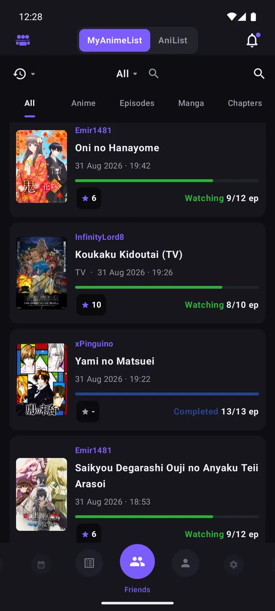
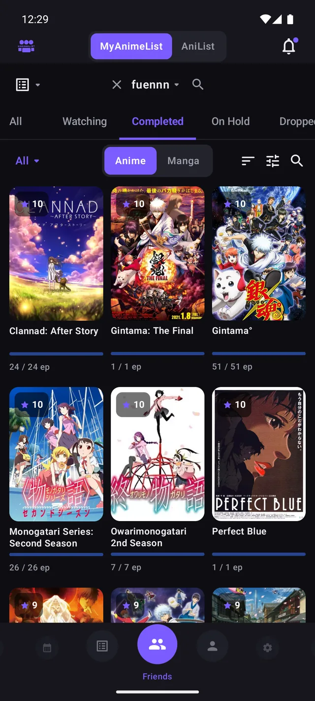
Find the next one.
Every official ranking, Top Anime and Manga, Suggested-for-You, full-screen search, and a random pick for the nights you cannot decide.
- Synopsis, score, rank, characters, staff and trailers
- Opening and ending themes, playable in the app
- Per-episode discussions from the MyAnimeList forums
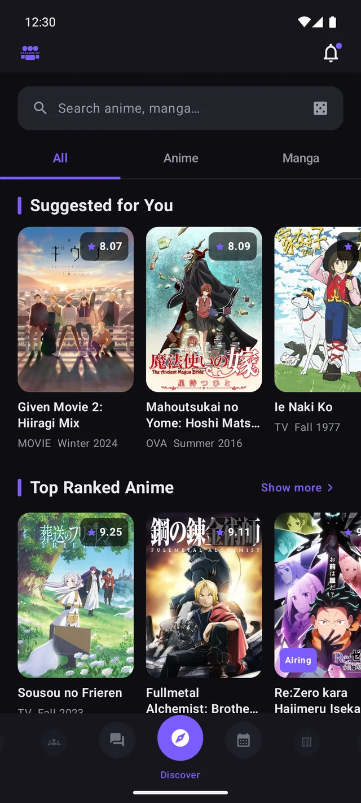
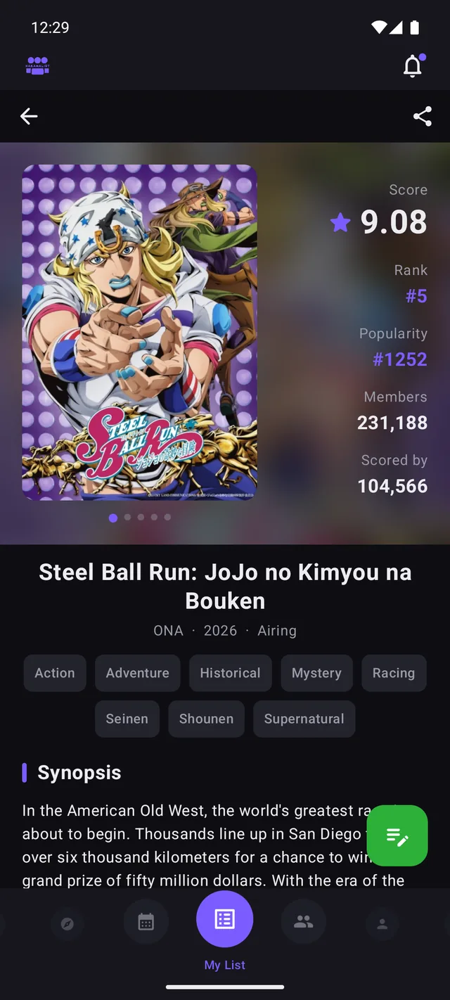
Never miss
a new season.
Winter, spring, summer and autumn. The season airing now, the one coming next, and the archive behind them, each opening as a grid you can sort and add from.
- This season, next season and the archive, one tap apart
- Sort by score, members or start date
- Add straight to Plan to Watch from the grid
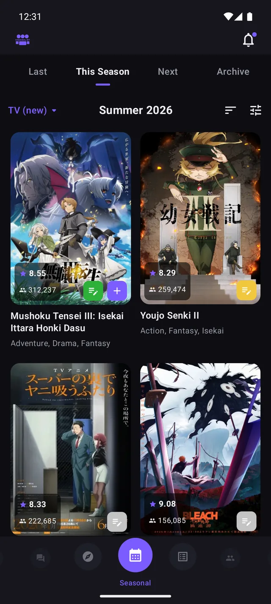
The news,
in the app.
MyAnimeList news opens and reads inside the app, not in a browser tab. The forums and the clubs browser are here too, and every episode has its own discussion linked from the title it belongs to.
- MyAnimeList news, read without leaving the app
- Boards, threads and per-episode discussions
- A clubs browser for the corners you already follow
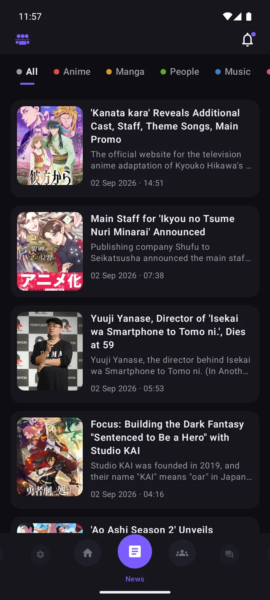
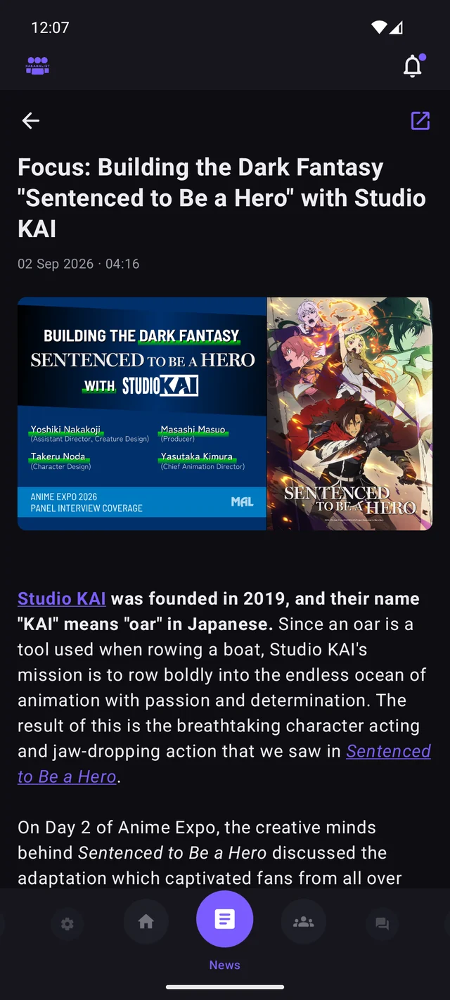
Your taste
in numbers.
Days watched and chapters read, mean score, and how your list breaks down by status, for anime and for manga. Anyone you follow has the same page, so comparing is just a matter of opening theirs.
- Anime and manga statistics, kept apart
- Watching, completed, on hold, dropped and planned, counted
- The same page for every friend
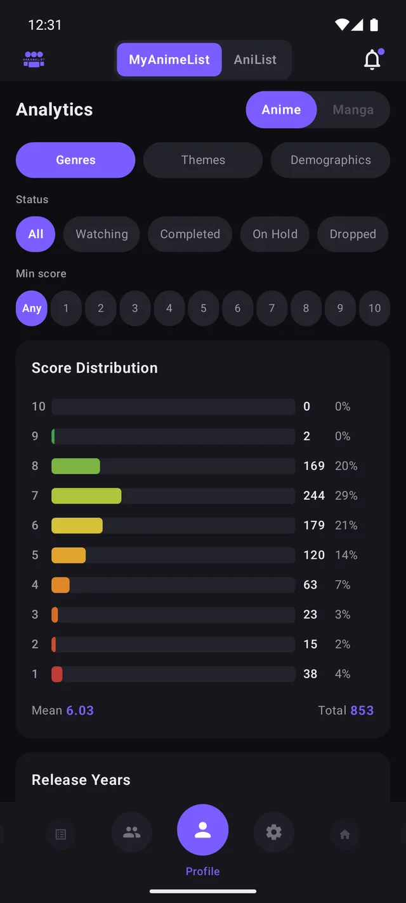
Phone.
Tablet.
Television.
It fills a tablet screen instead of sitting in a portrait strip, and it runs on Android TV and Google TV with its own launcher banner and full remote control.
- 56 languages, including right-to-left
- Light, dark and white themes with an accent colour dial
- Home-screen Continue widgets and airing notifications
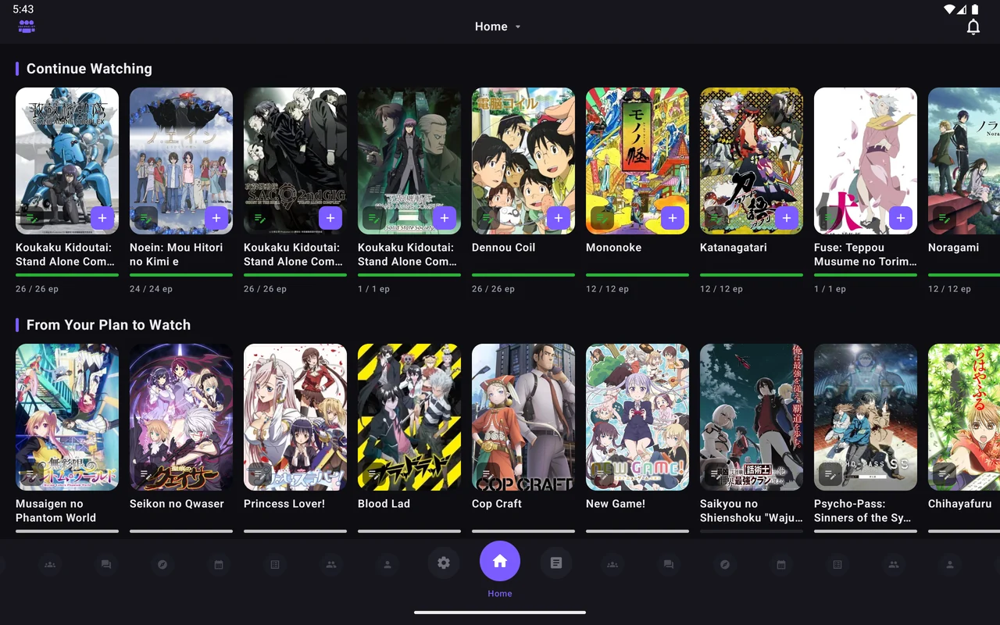
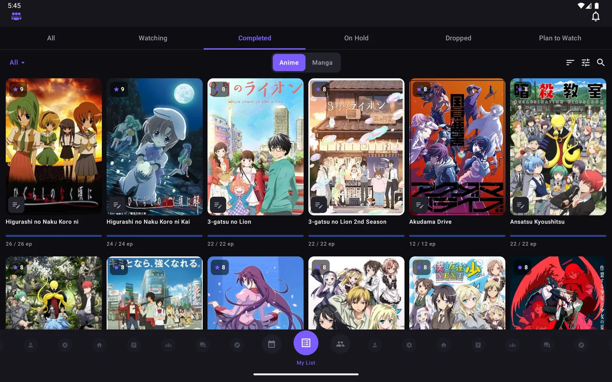
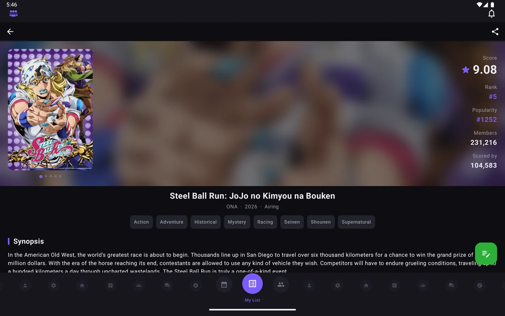
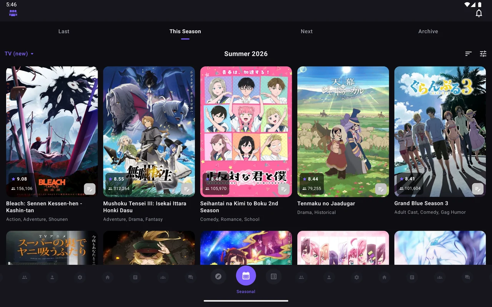
Questions,
answered.
Is NakamaList free?
Yes. NakamaList is completely free, with no ads and no third-party tracking.
Is NakamaList an official MyAnimeList app?
No. NakamaList is an independent, unofficial client. It uses the official MyAnimeList API with your own account and is not affiliated with MyAnimeList.
Does NakamaList track manga as well as anime?
Yes. You can track both anime and manga, including status, score, episodes, chapters, volumes, dates, tags and notes.
Can I sync with AniList?
Yes. You can sign in with AniList on its own, or link it alongside MyAnimeList to read reviews and keep both lists in sync.
Can I follow my friends?
Yes. Add people by MyAnimeList username or follow AniList accounts, then see everyone in one activity feed, browse their lists, and compare Friend Scores on any title.
Does NakamaList work on tablets and Android TV?
Yes. It fills a tablet screen instead of running in a portrait strip, and it runs on Android TV and Google TV with full remote control.
What Android version do I need?
NakamaList runs on Android 8.0 and newer.
Does NakamaList show seasonal anime and rankings?
Yes. You can browse every anime season, official rankings, recommendations, news, forums and clubs.
How do I report a bug or ask for a feature?
Open an issue on GitHub, or email nakamalist@proton.me. Bug reports and feature requests both have a template ready.
Start tracking.
Free, ad-free, and it keeps your list wherever you already keep it.